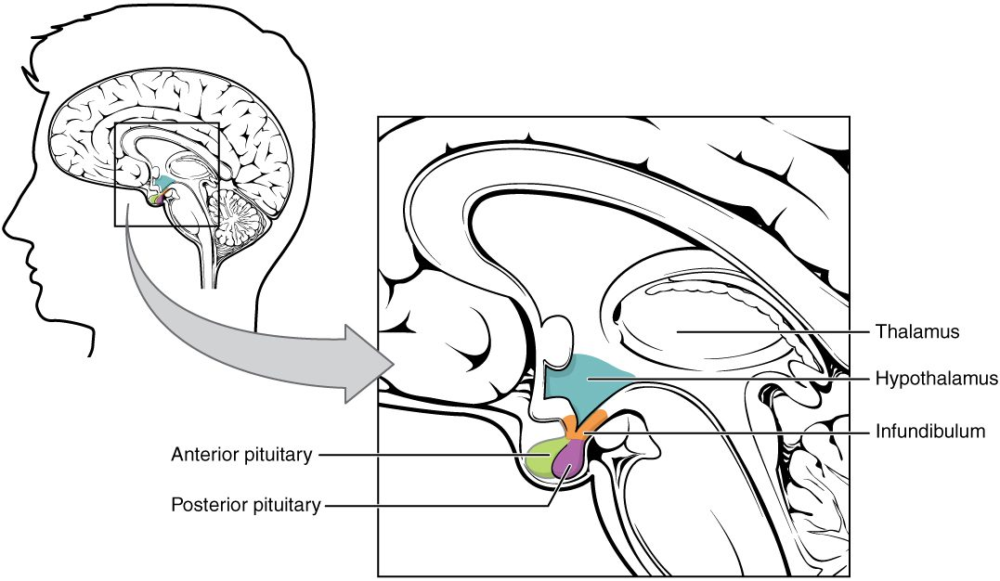

The hypothalamus and the pituitary gland together control more of your endocrine system than any other pair of structures. This page explains how they are joined, how the hypothalamus controls each lobe of the pituitary gland in a completely different way, and what every pituitary hormone does, with a hypothalamus and pituitary hormones chart to pull it together. It ends with the feedback loops that keep each hormone axis steady, and with the disorders you get when growth hormone or antidiuretic hormone is made in the wrong amount.
A tumor the size of a pea
A 42-year-old man sees his dentist because his lower teeth no longer meet his upper ones. His wedding ring has not fit for years, and his shoe size has gone up twice since he turned 30. A scan shows a benign tumor about a centimeter across, sitting in a hollow in the floor of his skull just below his brain. It is making far too much of a single hormone. To see how one small tumor can reshape a face and hands, you need the gland it grew in, and the part of the brain that controls that gland.
The pituitary gland and its two lobes
The pituitary gland is about the size of a pea. It sits in the sella turcica, the saddle-shaped hollow of the sphenoid bone you met with the skull, and hangs from the underside of the hypothalamus by a short stalk, the infundibulum (Latin for funnel) (Figure 1). Its older name, the hypophysis (hypo- = below, -physis = growth), means "growth below" the brain, and it survives in many terms on this page.

The pituitary gland is really two glands with different origins, stuck together:
- The anterior pituitary (also called the adenohypophysis; aden- = gland) is the front, about three quarters of the gland. It is glandular epithelium that grew up from the roof of the embryo's mouth. It has no nerve connection to the brain. It makes and releases six major hormones of its own.
- The posterior pituitary (also called the neurohypophysis; neur- = nerve) is the back quarter. It is nervous tissue: a downgrowth of the hypothalamus itself, made of the axons and axon terminals of hypothalamic neurons, with supporting glial cells. It makes no hormones. It stores and releases two hormones made by neurons in the hypothalamus.
Because the two lobes are built so differently, the hypothalamus controls them in two different ways: the posterior lobe by nerve impulses, the anterior lobe by hormones carried in a special set of blood vessels.
| Anterior pituitary | Posterior pituitary | |
|---|---|---|
| Other name | Adenohypophysis | Neurohypophysis |
| Tissue | Glandular epithelium | Nervous tissue: axons of hypothalamic neurons and glial cells |
| Embryonic origin | Upgrowth from the roof of the mouth | Downgrowth of the hypothalamus |
| Makes its own hormones? | Yes | No: stores and releases hormones made in the hypothalamus |
| Link to the hypothalamus | Blood vessels: the hypophyseal portal system | Axons running down the infundibulum |
| Hypothalamic signal | Releasing and inhibiting hormones | Nerve impulses in the same neurons that make the hormones |
| Hormones released | GH, TSH, ACTH, FSH, LH, prolactin | ADH, oxytocin |
The posterior pituitary: hormones made by neurons
Two groups of large neurons in the hypothalamus, the supraoptic and paraventricular nuclei, make the two posterior pituitary hormones. Each neuron makes mainly one of them: most ADH comes from the supraoptic nuclei and most oxytocin from the paraventricular nuclei, though each nucleus makes some of both. Follow one hormone molecule (Figure 2):
- The cell body of the neuron, in the hypothalamus, makes the hormone as a peptide and packs it into vesicles.
- The vesicles travel down the axon, through the infundibulum, to axon terminals in the posterior pituitary, where they are stored.
- When the neuron fires, action potentials run down the axon to the terminals. Calcium enters and the vesicles release their hormone by exocytosis, exactly as at a synapse.
- The hormone diffuses into a bed of capillaries in the posterior pituitary and is carried away in the blood.
So these are neurons that release hormones: nerve signals in the hypothalamus decide when each hormone enters the blood, within seconds.
The hypophyseal portal system
The anterior pituitary has no nerve link to the brain, yet the hypothalamus controls it minute by minute. It does so through blood vessels. A portal system is an arrangement in which blood passes through two networks of capillaries in a row, joined by veins, instead of returning to the heart after the first network. The hypophyseal portal system is the one that joins the hypothalamus to the anterior pituitary (Figure 3):
- A small artery feeds a first network of capillaries, the primary capillary plexus (plexus = network), at the base of the hypothalamus where the infundibulum begins.
- Neurons of the hypothalamus release their hormones into this first network.
- Short hypophyseal portal veins carry that blood down the infundibulum.
- The veins open into a second network of capillaries, the secondary capillary plexus, spread among the cells of the anterior pituitary.
- The hypothalamic hormones leave the capillaries and bind receptor proteins on anterior pituitary cells.
- Those cells release their own hormones into the same capillaries, and veins carry them out to the whole body.
![An enlarged view of the hypothalamus, the stalk and the pituitary gland, with a small head drawing for orientation. Nerve cells in the hypothalamus send their axons down to a first bed of capillaries at the top of the stalk, fed by a small artery. Veins run down the stalk from that capillary bed to a second bed of capillaries spread through the front lobe of the gland. Numbered steps show the hypothalamus releasing a hormone into the first capillary bed, that hormone reaching the front lobe through the veins and second capillary bed, and the front lobe releasing its own hormone into a vein that leaves the gland. The back lobe is drawn in outline only.](../figures/os-17-9.jpg)
Why does this matter? The hypothalamic hormones reach the anterior pituitary undiluted, at concentrations far higher than they would reach if they had to pass through the whole circulation first. Tiny amounts do the job, and almost none reaches the rest of the body.
Releasing and inhibiting hormones
The hypothalamic hormones that travel through the portal veins are named for what they do to the anterior pituitary:
- A releasing hormone makes anterior pituitary cells release a hormone. Thyrotropin-releasing hormone (TRH), corticotropin-releasing hormone (CRH), gonadotropin-releasing hormone (GnRH) and growth hormone–releasing hormone (GHRH) are the main ones.
- An inhibiting hormone holds release back. Growth hormone–inhibiting hormone, also called somatostatin (somat- = body, -stat = to stop), holds back growth hormone. Prolactin-inhibiting hormone, which is dopamine, holds back prolactin.
Prolactin is the one anterior pituitary hormone held back more than it is pushed. If the infundibulum is cut, dopamine can no longer reach the anterior pituitary: most of its hormones fall, but prolactin rises.
Tropic hormones
A tropic hormone (trop- = turning toward) is a hormone whose target is another endocrine gland: it makes that gland grow and release its own hormones. Four anterior pituitary hormones are tropic:
- Thyroid-stimulating hormone (TSH), also called thyrotropin, makes the thyroid gland grow and release its hormones.
- Adrenocorticotropic hormone (ACTH) (adreno- = adrenal gland, cortic- = outer layer, the cortex) makes the outer layer of the adrenal gland release its steroid hormones, especially the stress steroid taught in the adrenal topic.
- Follicle-stimulating hormone (FSH) and luteinizing hormone (LH) act on the gonads, the ovaries and testes. Together they are the gonadotropins. They drive the making of eggs and sperm and the release of the gonads' steroid hormones.
A hormone that is not tropic acts directly on ordinary tissues. Prolactin and growth hormone mostly act this way, although growth hormone also makes the liver release a second hormone.
Growth hormone and IGF-1
Growth hormone (GH, also called somatotropin) is a protein hormone and the most abundant hormone of the anterior pituitary. GHRH from the hypothalamus drives its release and somatostatin holds it back. It is released in pulses, the biggest during deep, non-REM sleep, and in larger amounts during puberty, after exercise and during fasting.
Growth hormone acts in two ways (Figure 4):
- Through IGF-1. GH makes the liver, and many tissues on their own, release insulin-like growth factor 1 (IGF-1; named for its chemical resemblance to a pancreatic hormone taught later in the chapter). IGF-1 drives growth: it makes chondrocytes in the epiphyseal plates divide, so long bones lengthen, and it makes muscle and other tissues take up amino acids and build protein. Most of the growth effects of GH run through IGF-1.
- Directly, on fuel use. GH makes fat cells break down stored fat and release fatty acids, which other cells burn. It makes muscle and fat take up less glucose and the liver release more, so the glucose level in your blood rises. By shifting cells toward fat as fuel, GH spares glucose for the brain.
![A flow chart of growth hormone control. At the top left, the hypothalamus releases its releasing hormone and the front lobe of the pituitary gland releases growth hormone into the blood. Three arrows lead down to three effects: fat cells break down stored fat; bone, muscle, nerve and immune cells take up more amino acids, divide more and die less; and the liver releases glucose and a second hormone, IGF-1, which adds to the growth effects. An orange arrow with a minus sign runs from IGF-1 back to the hypothalamus, which releases an inhibiting hormone, and a panel at the top right shows growth hormone release crossed out.](../figures/os-17-10.jpg)
IGF-1 and GH both feed back: they make the hypothalamus release more somatostatin and less GHRH, and they act on the anterior pituitary directly, so GH release falls.
The other anterior pituitary hormones
Besides GH and the four tropic hormones, the anterior pituitary releases prolactin (pro- = for, lact- = milk). During pregnancy and after birth, prolactin makes the milk-producing glands of the breast grow and make milk. Suckling at the nipple sends nerve signals to the hypothalamus that cut dopamine release, so prolactin rises. Outside pregnancy and nursing, prolactin stays low.
Here is every anterior pituitary hormone in one hypothalamus and pituitary hormones chart:
| Pituitary hormone | Hypothalamic control | Main target | Main effect |
|---|---|---|---|
| Growth hormone (GH) | GHRH raises; somatostatin lowers | Liver, bone, muscle, fat | Growth (mostly through IGF-1); fat breakdown; glucose in the blood rises |
| Thyroid-stimulating hormone (TSH) | TRH raises | Thyroid gland | Thyroid gland grows and releases its hormones |
| Adrenocorticotropic hormone (ACTH) | CRH raises | Outer layer of the adrenal gland | Releases its steroid hormones, especially the stress steroid |
| Follicle-stimulating hormone (FSH) | GnRH raises | Ovaries and testes | Eggs mature; sperm are made |
| Luteinizing hormone (LH) | GnRH raises | Ovaries and testes | Gonads release their steroid hormones; an LH surge releases an egg |
| Prolactin | Dopamine lowers (mainly) | Milk-producing glands of the breast | Milk production |
A useful memory hook: the anterior pituitary makes FLAT PiG: FSH, LH, ACTH, TSH, Prolactin and GH. The four in FLAT are tropic.
Osmoreceptors and thirst
Eat a bag of salted chips and within half an hour you are thirsty. The salt you absorbed raised the osmolarity of your plasma, the concentration of dissolved particles you met in Water and solutions. The osmolality of your plasma, the value labs measure, is normally about 275 to 295 mOsm/kg.
The change is detected by osmoreceptors: neurons in the front of the hypothalamus, in regions where the blood–brain barrier is leaky, so they sense the plasma directly. When osmolarity rises, water leaves the osmoreceptors, following the solute outside, and they shrink. Shrinking opens ion channels that stay shut while the membrane is stretched and open as it slackens, the cells depolarize, and they fire faster. They respond to a rise of as little as 1–2%.
Osmoreceptors drive two responses that work together:
- They excite the thirst center, neurons in the hypothalamus that produce the conscious urge to drink: thirst. A large fall in blood volume, sensed by stretch-sensitive sensory receptors in the heart and large vessels, and a dry mouth also trigger thirst.
- They excite the neurons that make ADH, so the posterior pituitary releases more of it.
Drinking adds water; ADH makes the kidneys keep water. Both dilute the plasma back toward its set point, and as osmolarity falls, the osmoreceptors swell, fire less, and both responses shut off. This is negative feedback. Thirst also switches off within minutes of drinking, before the water is absorbed, because sensory receptors in the mouth and throat report the swallowed water to the hypothalamus.
Antidiuretic hormone
Antidiuretic hormone (ADH; anti- = against, diuresis = passing urine), also called vasopressin, is a peptide made by hypothalamic neurons and released from the posterior pituitary.
What triggers it
- A rise in plasma osmolarity, sensed by osmoreceptors. This is the main, most sensitive trigger.
- A large fall in blood volume or blood pressure, of roughly 5 to 10% or more, as after a hemorrhage. Stretch-sensitive sensory receptors in the heart and large arteries fire less, and that signal reaches the hypothalamus.
- Nausea, pain and some drugs raise it. Alcohol lowers it, so a strong alcoholic drink increases urine output beyond what its water alone would cause.
What it does
- In the kidneys, ADH binds receptor proteins on the cells of the last stretch of the kidney's tubules. Through cAMP, the cells move aquaporins, water channels you met in Passive transport, into their membranes. More water is pulled back out of the urine into the blood, so you pass a small volume of concentrated urine. Without ADH those cells have few aquaporins, and a large volume of dilute urine flows out. The kidney chapter covers this in detail.
- On blood vessels, high levels of ADH constrict small arteries, which raises blood pressure. This is where the name vasopressin (vaso- = vessel, press- = pressure) comes from. It matters mainly after large blood loss, when ADH levels climb very high.
Oxytocin
Oxytocin (oxy- = quick, toc- = childbirth) is the second posterior pituitary peptide. It acts on smooth muscle in two places:
- The uterus in labor. Late in pregnancy, the smooth muscle of the uterus adds many oxytocin receptor proteins. As the baby's head presses on the lower end of the uterus, stretch-sensitive sensory receptors signal the hypothalamus, more oxytocin is released, contractions grow stronger, the head presses harder, and more oxytocin is released. This is the positive feedback loop you met in Homeostasis and feedback loops. It ends when the baby is born and the stretch stops.
- The breast during nursing. Suckling sends nerve signals to the hypothalamus, oxytocin is released, and it makes the cells around the milk-filled sacs of the breast contract, squeezing milk into the ducts toward the nipple. Prolactin makes the milk; oxytocin moves it out.
Oxytocin strengthens labor, but it is not what makes labor possible. Mice that lack oxytocin or its receptor protein give birth normally, and women with very little oxytocin have had normal labors. When contractions are weak, hospitals give synthetic oxytocin to strengthen them.
Hypothalamic–pituitary axes and feedback
An axis, in endocrinology, is a chain of three glands in which each one drives the next: hypothalamus → anterior pituitary → target gland. There are three main ones:
- The thyroid axis: TRH → TSH → the thyroid gland's hormones.
- The adrenal axis: CRH → ACTH → the stress steroid from the outer layer of the adrenal gland.
- The gonadal axis: GnRH → FSH and LH → the steroid hormones of the ovaries and testes.
Each axis is kept steady by negative feedback at more than one level (Figure 5):
- Long-loop feedback: the final hormone, from the target gland, travels back in the blood and inhibits both the hypothalamus and the anterior pituitary. This is the main brake.
- Short-loop feedback: the pituitary hormone itself inhibits the hypothalamus.
Reading the axis to find the fault
Because of long-loop feedback, you can tell where an axis has failed by measuring two hormones at once, the tropic hormone and the final one:
- The target gland fails. The final hormone falls, the brake comes off, and the tropic hormone rises high. Low final hormone with high tropic hormone points to the target gland.
- The pituitary fails. The tropic hormone falls, so the target gland is no longer driven and the final hormone falls too. Low final hormone with low tropic hormone points to the pituitary or hypothalamus.
- The target gland overproduces on its own, as from a tumor. The final hormone is high, and feedback drives the tropic hormone very low.
- Someone takes the final hormone as a drug. Feedback suppresses the tropic hormone, and the target gland, no longer driven, shrinks. That is why people who have taken steroid drugs for weeks must taper them off slowly: their own adrenal glands need time to recover.
Hormone release also follows the time of day and the stage of life: TSH and ACTH rise and fall over each 24 hours, GH peaks in deep sleep, and the gonadal axis wakes up at puberty.
Disorders of growth hormone and ADH
Too much or too little growth hormone
Almost all excess GH comes from a benign tumor of the GH-secreting cells. What it does depends on whether the epiphyseal plates are still open:
- Gigantism (gigant- = giant): too much GH in childhood, before the epiphyseal plates close. Long bones keep lengthening, and the child grows very tall, sometimes well over two meters.
- Acromegaly (acro- = extremity, megal- = large): too much GH in adulthood. The epiphyseal plates have closed, so height cannot change, but the bones of the hands, feet, jaw and face thicken, soft tissues grow, and the tongue and internal organs enlarge. The glucose in the blood also runs high. This is the man at the top of the page; it develops so slowly that it is often noticed only from old photographs.
- Pituitary dwarfism (also called growth hormone deficiency): too little GH in childhood. The child grows slowly and ends up short but normally proportioned. Injections of GH made by bacteria carrying the human gene, given before the plates close, restore much of the lost growth.
A pituitary tumor can also cause trouble by its size alone. The optic chiasm lies just above the pituitary gland, so a tumor growing upward presses on the crossing fibers and costs the patient the outer half of the visual field in both eyes.
Too little or too much ADH
- Diabetes insipidus (diabetes = siphon, passing through; insipidus = tasteless): ADH is missing or the kidneys cannot respond to it. The kidneys cannot keep water, so the person passes very large volumes of dilute urine, sometimes more than 10 liters a day, and is constantly thirsty. In central diabetes insipidus, the hypothalamus or posterior pituitary makes too little ADH, often after head injury or surgery, and a synthetic ADH spray or tablet treats it. In nephrogenic diabetes insipidus (nephr- = kidney), ADH is present but the kidney cells do not respond. The name has nothing to do with the common "sugar" diabetes, taught with the pancreas, except that both make you pass large amounts of urine.
- SIADH, the syndrome of inappropriate ADH secretion: ADH keeps being released even though the plasma is already dilute, from some lung cancers, brain injuries and drugs. The kidneys keep too much water, the urine is concentrated, and the plasma becomes dilute, with a low sodium concentration. A low plasma sodium makes water move into brain cells, which swell, causing confusion and, if severe, seizures.
| Diabetes insipidus | SIADH | |
|---|---|---|
| ADH effect on the kidneys | Too little (hormone missing or kidneys unresponsive) | Too much |
| Urine volume | Very large | Small |
| Urine concentration | Very dilute | Concentrated |
| Plasma osmolarity | High | Low |
| Plasma sodium concentration | High or high-normal | Low |
| Thirst | Intense | Not driven by the plasma, which is dilute |